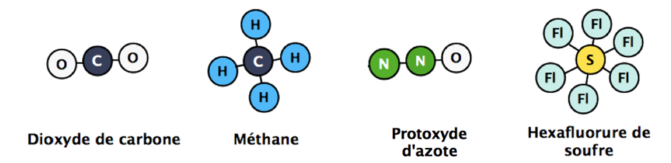
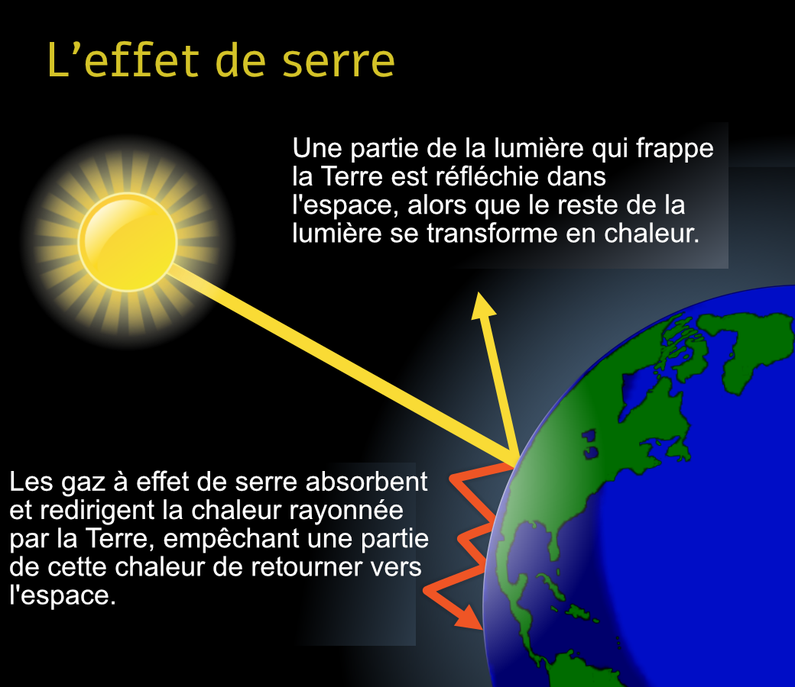

Mélanges et transformations chimiques
T1C03
Compétences et attendus prof
Attendus du BO
- Mettre en oeuvre une technique de séparation de liquides non miscibles
- Observer le phénomène de saturation lors du mélange d'un solide dans l'eau et en rendre compte quantitativement
- Rechercher et exploiter des informations relatives à la composition de l'air et citer des gaz qui contribuent à l'effet de serre
- Réaliser un mélange pour lequel les changements observés peuvent être interprétés par une transformation chimique (changement de couleur, production d'un gaz, etc.)
- Rechercher et exploiter des informations sur les contraintes de sécurité relatives à la manipulation des produits ménagers et sur les conséquences de ces produits sur l'environnement
- Associer les pictogrammes de sécurité visibles dans le laboratoire de chimie aux dangers et aux risques qui leur correspondent
Compétences cycle 4
- D1.1/1 S'exprimer à l'oral
- D1.3/1.2 Calculer avec des nombres entier et des nombres décimaux
- D4/1.1 Extraire et organiser des informations utiles à la résolution d'un problème
De quoi est fait l'air ? DI
Compétences travaillées
| ID | Compétence travaillée | TB | MS | MF | MI |
|---|---|---|---|---|---|
| D1.3/1.2 | Calculer avec des nombres entier et des nombres décimaux | ||||
| D4/1.1 | Extraire et organiser des informations utiles à la résolution d'un problème |
Documents
L'air est un mélange de plusieurs gaz. Il est approximativement composé d'environ :
- 78 % de diazote (N2) ;
- 21 % de dioxygène (O2) ;
- moins de 1 % d'autres gaz dont :
- des gaz rares (argon, néon, hélium, krypton, xénon) ;
- de différents gaz à effet de serre, dont le dioxyde de carbone est le principal représentant (environ 0,0417 % en juillet 2022) ;
Animations et ressources sur effet de serre :
- Animation de la NASA : https://climate.nasa.gov/internal_resources/2282/
Animation pHet sur l'effet des gaz à effet de serre : https://phet.colorado.edu/sims/html/greenhouse-effect/latest/greenhouse-effect_all.html
Pouvoir réchauffant des principaux gaz à effet de serre. 
L'effet de serre est un processus naturel, il empêche une partie de l'énergie thermique rayonnée par la Terre de retourner dans l'espace. 
Questions FE
- Quels sont les deux principaux constituants de l'atmosphère ?
- Quel pourcentage total ces deux gaz représentent-ils ?
- Quels sont les deux principaux constituants de l'atmosphère ?
- L'air est-il un mélange ou un corps pur ? Justifie ta réponse.
- Cite quatre gaz à effet de serre.
- Quel est le principal gaz à effet de serre présent dans l'atmosphère ?
- Cite quatre gaz à effet de serre.
- Quel est le pourcentage de dioxyde de carbone dans l'air en juillet 2022 ?
- Regarde les animations sur tablette. Quelle serait la température de la Terre
- avec gaz à effet de serre minimal ?
- avec gaz à effet de serre maximal ?
C'est dangereux-ça ? oral
| ID | Compétence travaillée | TB | MS | MF | MI |
|---|---|---|---|---|---|
| D1.1/1 | S'exprimer à l'oral | ||||
| D2/2 | Coopérer et réaliser des projets |
- Par groupe de 3, résumez avec vos propres mots les risques et les précautions à prendre pour chaque pictogramme.
- À la fin de l'heure, chaque groupe sera interrogé sur son travail fait pour un pictogramme
Pictogrammes : signification et risques FE
Explosif
Inflammable
Comburant
Gaz sous pression
Corrosif
Toxique
Nocif ou irritant
Danger pour la santé
Danger pour l'environnement
Synthèse prof
Certaines substances doivent être maniées avec précaution, identifier et reconnaître les pictogrammes de sécurité permet de savoir ce qu'il faut faire en utilisant de tels produits en réduisant les problèmes en lien avec la santé et l'environnement.
Annexe : Risques liés aux différents produits prof
Ne rien écrire sur cette feuille. Il faut la rendre à la fin de l'activité !
- Comburant
- Ces produits peuvent provoquer ou aggraver un incendie, ou même provoquer une explosion s'ils sont en présence de produits inflammables. On les appelle des produits comburants.
- Inflammable
- Ces produits peuvent s’enflammer, suivant les cas :
- au contact d’une flamme ou d’une étincelle
- sous l’effet de la chaleur ou d’un frottement
- au contact de l’air (en s’évaporant certains produits dégagent des gaz qui s’enflamment spontanément)
- Explosif
- Ces produits peuvent exploser au contact d'une flamme, d'une étincelle, d'électricité statique, sous l'effet de la chaleur, d'un choc, de frottements …
- Toxique
- Ces produits empoisonnent rapidement, même à faible dose. Ils peuvent provoquer des effets très variés sur l'organisme : nausées, vomissements, maux de tête, perte de connaissance ou d'autres troubles plus importants entraînant la mort.
- Corrosif
- L’expression " produits corrosifs " s’applique à des substances qui possèdent le pouvoir d’endommager les tissus vivants (en particulier ceux de l’organisme humain) et d’attaquer d’autres matières comme les métaux et le bois (exemple : acides, alcalis, …). Certains substances qui ne sont pas corrosives à l’état naturel et au sec le deviennent au contact de l’eau ou de l’humidité de la peau ou des muqueuses.
- Dangereux pour l'environnement
- Ces produits provoquent des effets néfastes sur les organismes du milieu aquatique (poissons, crustacés, algues, autres plantes aquatiques…).
- Danger pour la santé
- Ces produits rentrent dans une ou plusieurs de ces catégories :
- produits cancérogènes : ils peuvent provoquer le cancer ;
- produits mutagènes : ils peuvent modifier l'ADN des cellules et peuvent alors entraîner des dommages sur la personne exposée ou sur sa descendance (enfants, petits-enfants…) ;
- produits toxiques pour la reproduction : ils peuvent avoir des effets néfastes sur la fonction sexuelle, diminuer la fertilité ou provoquer la mort du fœtus ou des malformations chez l'enfant à naître ;
- produits qui peuvent modifier le fonctionnement de certains organes comme le foie, le système nerveux… Selon les produits, ces effets toxiques apparaissent si l'on a été exposé une seule fois ou bien à plusieurs reprises ;
- produits qui peuvent entraîner de graves effets sur les poumons et qui peuvent être mortels s'ils pénètrent dans les voies respiratoires (après être passés par la bouche ou le nez ou bien lorsqu'on les vomit) ;
- produits qui peuvent provoquer des allergies respiratoires (asthme, par exemple).
- Gaz sous pression
- Ces produits sont des gaz sous pression contenus dans un récipient. Certains peuvent exploser sous l'effet de la chaleur : il s'agit des gaz comprimés, des gaz liquéfiés et des gaz dissous. Les gaz liquéfiés réfrigérés peuvent, quant à eux, être responsables de brûlures ou de blessures liées au froid appelées brûlures et blessures cryogéniques.
Les substances du quotidien prof
- Chez toi, trouve trois produits contenant des pictogrammes de sécurité
- Donne le nom des produits
- Liste le nom des pictogrammes
- Donne les précautions d'usage
- Chez toi, trouve trois produits contenant des pictogrammes de sécurité
- Donne le nom des produits
- Liste le nom des pictogrammes
- Donne les précautions d'usage
- Chez toi, trouve trois produits contenant des pictogrammes de sécurité
- Donne le nom des produits
- Liste le nom des pictogrammes
- Donne les précautions d'usage
- Chez toi, trouve trois produits contenant des pictogrammes de sécurité
- Donne le nom des produits
- Liste le nom des pictogrammes
- Donne les précautions d'usage
- Chez toi, trouve trois produits contenant des pictogrammes de sécurité
- Donne le nom des produits
- Liste le nom des pictogrammes
- Donne les précautions d'usage
- Chez toi, trouve trois produits contenant des pictogrammes de sécurité
- Donne le nom des produits
- Liste le nom des pictogrammes
- Donne les précautions d'usage
Comment récupérer un liquide d'un mélange ? AE
Attendus et compétences prof
Attendus
- Mettre en oeuvre une technique de séparation de liquides non miscibles
- Mettre en évidence expérimentalement un critère pour prévoir la position respective de deux couches liquides non miscibles
Compétences
Documents pres
Questions
Fais un schéma représentant chaque tube à essai de l'expérience montrée en vidéo et indique en titre si c'est un mélange ou une transformation chimique qui c'est produit.
- Formule une hypothèse expliquant pourquoi lorsqu'on mélange de l'eau et de l'huile, l'eau se situe toujours en dessous1
- Remet dans le bon ordre le protocole suivant, puis fait l'expérience après validation de ton professeur :
- __
- Prélève 5 mL d'eau dans la même éprouvette, mesure la masse
- __
- Calcule la masse d'eau et d'huile
- __
- Mesure la masse d'une éprouvette à vide
- __
- Prélève 5 mL d'huile dans une éprouvette, mesure la masse
- Ton hypothèse était-elle correcte ?
Complète le texte ci-dessous.
Dans un entre deux liquides, le liquide est toujours du liquide (pour un même volume).
Mise en application : Traitement des eaux usées
Lorsqu'on utilise de l’eau on en rejette une partie dans l’environnement. C’est ce que l’on appelle l’eau usée, qui peut contenir différents polluants.
Une première partie du traitement consiste à filtrer les éléments solides au travers de grille. Puis, une séparation des éléments plus lourds que l'eau, qui sont évacués par le fond d'une cuve, et des éléments plus légers que l'eau, qui sont raclés à la surface. Un dernier traitement biologique permet de retirer les derniers polluants avant de pouvoir rejeter l'eau dans un milieu naturel.
Matériel :
- eau polluée
- béchers
- filtre et entonnoir
- ampoule à décanter
- Fais le schéma de l'expérience avant la première séparation.
- Fais le schéma de l'expérience avant la deuxième séparation.
Quelle quantité de sel peut-on dissoudre dans l'eau ? AE
Documents
L'eau de mer peut être assimilée à un mélange avec de l'eau et du sel. Chaque mer possède cependant une quantité de sel dissoute différente. Certains lac peuvent aussi avoir une concentration en sel supérieure à celle des mers et océans, comme le lac Assal, le lac Rose, le lac Don Juan ou la mer Morte.
Sur ces derniers, on peut observer des tas de sels proche des côtes aux endroits ou le niveau de l'eau est plus faible.
Compte rendu expérimental
- Quelle question peux-tu dégager du document ci-dessus ?
- Formule une hypothèse répondant à cette question.
Remet le protocole suivant dans le bon ordre en indiquant un chiffre au niveau des tirets :
- __
- Mesurer la masse d'eau mise dans l'éprouvette
- __
- Prélever une masse m de sel dans une coupelle à l'aide d'une spatule
- __
- Mesurer la masse de l'éprouvette, puis celle du bécher et note les valeurs
- __
- Mesurer un volume de 10 mL d'eau dans une éprouvette
- __
- Mesure la masse finale
- __
- Mettre l'eau puis le sel dans le bécher
- __
- Mélanger à l'aide d'un agitateur
Mesures expérimentales :
- masse de l'éprouvette
- m = __ g
- masse du bécher
- m = __ g
- masse d'eau
- m = __ g
- masse finale
- m = __ g
- Fais le schéma de l'expérience au moment de l'ajout du sel dans l'éprouvette.
- Fais l'expérience décrite ci-dessus avec la masse de sel qui t'a été donné (m = __ g), puis répond aux questions suivantes.
- Le sel a-t-il intégralement disparu ?
- Que peux-tu remarquer sur la masse totale, la masse de sel et la masse d'eau ?
- Fais le schéma de l'expérience à la fin de ton expérience.
- Le sel a-t-il intégralement disparu ?
Rempli le tableau suivant
Masse de sel (g) 0.5 1.0 1.5 2.0 2.5 3.0 3.5 4.0 Soluble - Ton hypothèse était-elle correcte ?
Conclusion
Complète la synthèse suivante.
- On appelle la quantité de pouvant être dissoute dans un
- Si le est intégralement dissout dans le liquide, le mélange est , sinon, on observe des particules en suspension, le mélange est .
- À une température de 20°C, un litre de solution peut contenir jusqu'à 360 g de sel. Quelle masse de sel peut être contenue dans 10 mL de solution ?
- À une température de 20°C, un litre de solution peut contenir jusqu'à 2000 g de sucre. Quelle masse de sucre peut être contenue dans 10 mL de solution ?
Vrai ou faux ?
Lorsqu'on à mélange hétérogène entre deux liquide, le liquide le plus léger va en dessous.
- Vrai
- Faux
- Faux
- Le liquide le plus lourd va en dessous
Il existe une quantité maximale de solide pouvant être dissoute dans un liquide.
- Vrai
- Faux
- Vrai
- Au delà de cette quantité il n'y a plus de dissolution possible
L'atmosphère est constitué d'environ 80% de dioxygène de de 20% de dioxyde de carbone.
- Vrai
- Faux
- Faux
- L'air est constitué d'environ 80% de diazote, 20% de dioxygène et de moins de 1% d'autres gaz
Magique ou chimique ?
- Attendus
- Réaliser un mélange pour lequel les changements observés peuvent être interprétés par une transformation chimique (changement de couleur, production d’un gaz, etc.)
- Mesurer un volume de gaz par déplacement de liquide.
- Réaliser expérimentalement un dispositif de conversion d’énergie et en rendre compte par la représentation d’une chaîne énergétique.
- As ton avis, est-ce-que le mélange subit une transformation chimique ?
- Que remarques-tu sur l'évolution de la température du mélange ?
Complète le schéma ci-après.
- Que remarques-tu sur l'évolution de la température du mélange ?
Imagine une expérience permettant de déterminer le volume de gaz produit
- Placer le bicarbonate de soude dans l'erlenmeyer
- Mettre quelques cm d'eau dans le fond du cristallisoir et remplir l'éprouvette d'eau
- Retourner l'éprouvette dans le cristallisoir et placer le tube dans l'ouverture
- Verser de l'acide dans l'erlenmeyer et reboucher immédiatement avec le bouchon
- Mesurer le volume de gaz produit
- Fait le schéma de l'expérience.
- Un est constitué de plusieurs (aussi appelées espèces chimiques).
- Lors d'une les substances de départ sont transformées en de nouvelles substances (apparition d'un , changement de ou apparition d'un ).
Notes de bas de page:
Aide : revoir le chapitre "Masse et volume, quelle différence ?"
https://www.inrs.fr/dms/inrs/CataloguePapier/ED/TI-ED-4406/ed4406.pdf